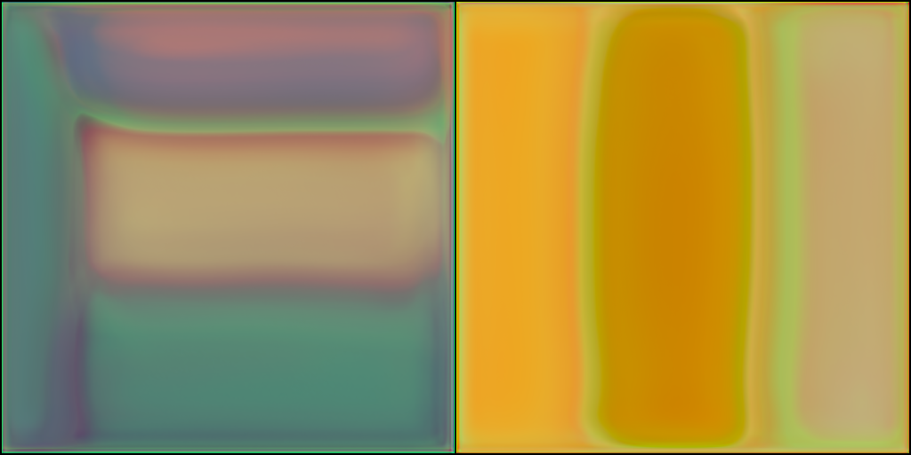
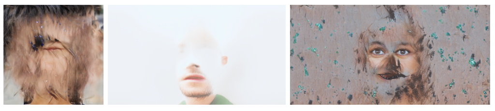

This week’s lecture by Terence Broad completely reshaped my perspective on what it means to “create” with AI. Instead of showing us how to prompt better images or get more polished results, he took us into the messy, glitchy, and often unstable process of working against the model treating neural networks not as tools, but as unpredictable creative collaborators.
What impressed me most was that Terence first gained fame through a project where he trained a neural network to “reconstruct” the movie Blade Runner frame by frame. At first, this sounded like a purely technical experiment, but as he talked about the work being exhibited at the Whitney Museum and sparking copyright disputes, I began to realize it was something deeper: a machine “trying to recall” a movie it had “watched”.

The Independent (2017) Blade Runner 2049 VFX cityscape still [Online image]. Published 7 October 2017. Available at: The Independent website (Accessed: 1 May 2025)
This makes me wonder: are we using AI to replicate culture, or should we let it “misremember”, “distort”, or “hallucinate” to find new meanings within those imperfections?
What fascinated me most was Terence’s later attempt to abandon datasets entirely. In his project Unstable Equilibrium, he replaced the generator and discriminator in a traditional GAN with two generators that imitated each other. The images produced by this structure are often unstable and bizarre, yet highly charged with tension.

Broad, T. (2019) (un)stable equilibrium [Online image]. Image: still from (un)stable equilibrium 1:1. Available at: https://terencebroad.com/works/unstable-equilibrium (Accessed: 1 May 2025)
This concept of “reference-free creation” was revolutionary to me. In my own projects, I often rely on existing data or aesthetics for guidance. But this lesson made me ask: What would happen if we let the model generate logic internally? What if instead of training it from the outside, we let it “create the world from within”?
Another memorable concept was “network bending” instead of training models to perform new tasks, Terence directly introduced filters, noise, and masks into a network’s “middle layers” to interfere with neuron activation paths, yielding bizarre outputs.

Broad, T. et al. (2022) Figure 1: Overview of network bending framework [Online image]. In Network Bending: Expressive Manipulation of Generative Models in Multiple Domains. Entropy. doi: 10.3390/e24010028 (Accessed: 1 May 2025)
This resembles glitch art at the code level. By forgoing control over results and intentionally “breaking” the system in specific ways, he observes what emerges. This approach made me realize: sometimes the most powerful creations don’t start from scratch, but from inserting new elements into existing systems to unleash their unexpected potential.
This lesson has challenged many of my assumptions about AI. I used to see AI as a tool that needed to be “optimized” crafting better prompts, training with cleaner data, and seeking perfect results. But Terence’s practice is the complete opposite. He doesn’t pursue “correctness,” but rather “contradiction,” “chaos,” and “failure”.
I’ve come to realize that:
- Prompts are just one approach intervening in network structures is also a possibility.
- “Failure” isn’t an acceptable cost, but can become the very objective of creation.
- Neural networks can be “played” like musical instruments, not just used as tools.
- The “generation space” isn’t just about outcomes, but a behavioral process in itself.